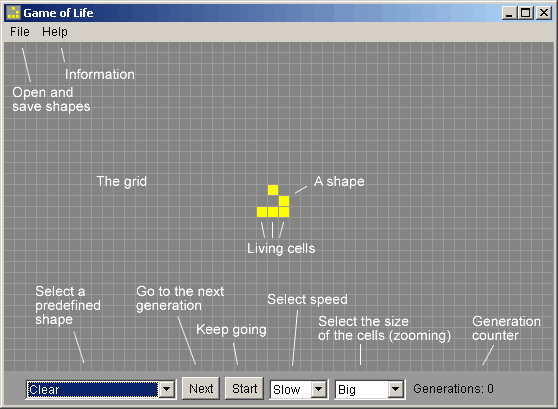

<!DOCTYPE HTML PUBLIC "-//W3C//DTD HTML 4.01 Transitional//EN">
<html>
<head>
<title>Game of Life manual</title>
<link title="Main" rel="stylesheet" type="text/css" href="../../style.css">
</head>
<body>


<div class="body">

<h3>The Game</h3>

<p>The Game of Life is not your typical computer game. It is a 'cellular
automaton', and was invented by Cambridge mathematician John Conway.</p>

<p>This game became widely known when it was mentioned in an article published
by Scientific American in 1970. It consists of a collection of cells which,
based on a few mathematical rules, can live, die or multiply. Depending on
the initial conditions, the cells form various patterns throughout the course of the game.</p>

<h3>The Rules</h3>

<dl>
<dt><b>For a space that is 'populated':</b>
<dd>Each cell with one or no neighbors dies, as if by loneliness.
<dd>Each cell with four or more neighbors dies, as if by overpopulation.
<dd>Each cell with two or three neighbors survives.
<dt><b>For a space that is 'empty' or 'unpopulated'</b>
<dd>Each cell with three neighbors becomes populated.
</dl>

<h3>The Controls</h3>



<p>Choose a figure from the pull-down menu or make one yourself by clicking on
the cells with a mouse. A new generation of cells (corresponding to one
iteration of the rules) is initiated by the 'Next' button. The 'Start'
button advances the game by several generations.
Game speed is regulated by the Slow-Fast-Hyper pull-down menu.
With the Big-Medium-Small pull-down menu you can change the size of the cells, like you
are zooming in or out of the grid.</p>

<p>You can open or save shapes from the File menu. You can also drag shape files from your
harddisk or from a web page to the program. On Windows you can open a shape file (with the .cells file extension)
by double clicking it.</p>

<h3>The Game Online</h3>

<p>The latest version, the Life Lexicon and other information can be found online.</p>

<ul>
<li><a href="http://www.bitstorm.org/gameoflife/">Game of Life applet</a></li>
<li><a href="http://www.bitstorm.org/gameoflife/standalone/">Game of Life download</a></li>
<li><a href="http://www.bitstorm.org/gameoflife/lexicon/">Life Lexicon</a> (compilation of shapes by Stephen A. Silver)</li>
<li><a href="http://www.bitstorm.org/gameoflife/code/">Game of Life source code</a> (for programmers)</li>
</ul>

<h3>The History</h3>

<p>The first version was a simple Java applet written in Java 1.0 and put online on July 3, 1996.</p>

<p>
1.1: Double buffering to screen; faster paint<br>
1.2: Arrowkeys changed; better use of `synchronized'<br>
1.3: Select speed from drop down menu and draw with mouse<br>
1.4: Use Java 1.1 events, change 13 deprecated methods, some refactoring. 2003-11-08<br>
1.5: Lots of refactoring, zooming, large improvements. 2004-09-20
</p>

<h3>The License</h3>

<pre style="border: 1px solid darkgray; padding: 4px">
The Game of Life is invented by John Conway.

This license is about this software (the program, documentation and graphics).

Copyright 1996-2004 Edwin Martin <edwin@bitstorm.org>

This software is freeware, which means:

You are free to use this software.

You are free to distribute the software in unmodified form.
</pre>


<p><i>Life is a bit</i> -
<a href="http://www.bitstorm.org/edwin/en/">Edwin Martin</a> &lt;<a href="mailto:edwin@bitstorm.org">edwin@bitstorm.org</a>&gt;</p>

</div>

<script>var _gaq=[['_setAccount','UA-93616-1'],['_trackPageview']];(function(d,t){var g=d.createElement(t),s=d.getElementsByTagName(t)[0];g.src='//www.google-analytics.com/ga.js';s.parentNode.insertBefore(g,s)}(document,'script'))</script>

</body>
</html>
